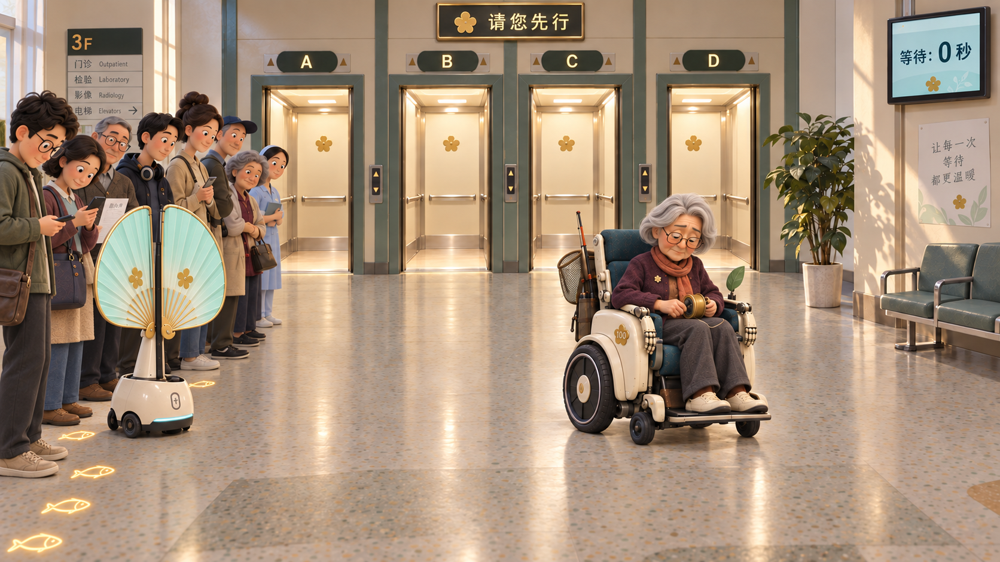
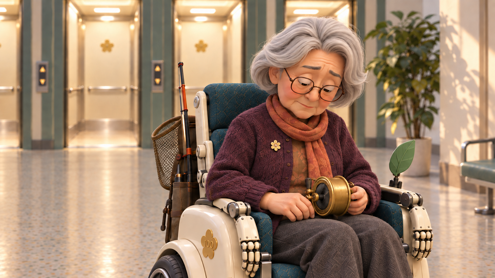
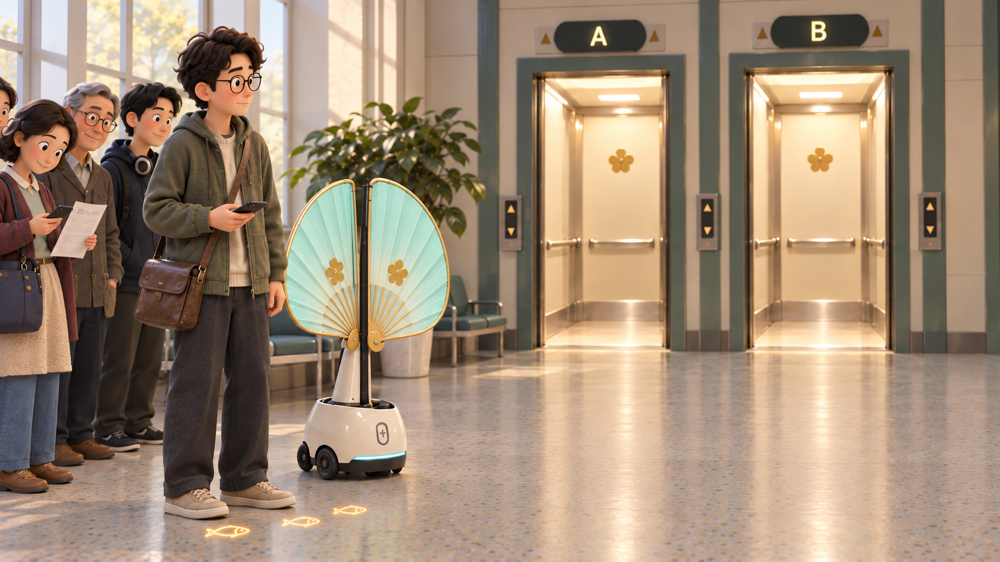
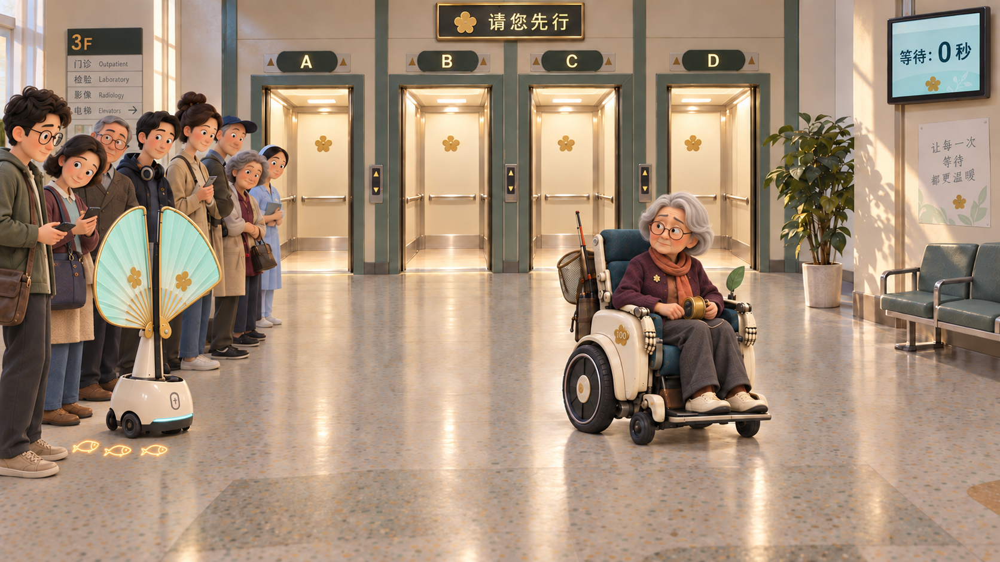

请不要让我永远第一个 / SHOT PACKAGE
她在等朋友。
所有人却在等她。
16 秒 · 四个镜头 · 配图、动作提示词、对白与剪辑说明
默认只生成镜头 02、03；镜头 01、04 直接用图片剪辑。四张图都是独立原图，点击图片可打开。当前交付为制作素材，尚非 AI 成片。
SHOT 01 / 00:00–00:03
候梯厅全景

电梯都开着，路也空着，却没有一个人走。
制作：直接在剪映使用静帧，3 秒；缩放从 100% 到 102%，保持画面中心不变。
声音：0.35 秒：轻柔电梯提示音。1.0–2.2 秒：折折（画外）“请您先行。”
即梦动作提示词
以输入图片为第一帧，保持同一医院、人物站位、暖色光线和手工质感三维动画。5秒单一连续全景。林遥低头整理膝上的线轴；左侧第一位戴眼镜的年轻乘客低头看手机，随后听到服务提示，轻轻抬眼。折扇机器人一侧扇面轻轻展开，像发出一次礼貌邀请。四部电梯维持敞开，中央通道保持空白。摄影机极轻地向前推进。所有人物留在原有位置，不发生迈步或摆手；这些动作留给后续镜头。脚前小鱼只是贴地光影，不变成导航路线。无对白、无配乐、无新增字幕。
下载本镜提示词 TXT验收：空间关系清楚：人群左、林遥右、中央空。镜头内不提前发生迈步、退步或林遥摆手。
SHOT 02 / 00:03–00:08
林遥摆手

她把手里的事停一下：你们先走，我还要等朋友。
制作：用本图生成 5 秒视频。此图已经是中景，保持首帧构图，不再要求模型重新切镜。
声音：保留室内环境底声和轻微衣料声。本镜先不放林遥对白；她的声音接到镜头 03 的乘客反应上。
即梦动作提示词
以输入图片为第一帧，保持林遥的脸、银发、眼镜、紫红针织衫、锈色围巾、线轴及轮椅结构，保持当前中景构图。5秒，一个连续镜头，摄影机稳定。起初林遥低头看着膝上的铜色线轴。她停下动作，抬眼看向画面左侧的人群；左手继续托住线轴，画面左侧的那只空着的右手从膝边抬起，掌心温和地朝向人群，轻轻摆两下，明确表示“你们先走”。随后右手放回膝边，她转头看向画面右侧走廊，等朋友回来。表情从随意转为略带疑惑，动作自然、清楚，有短暂停顿。右手摆动是本镜头主要动作，不能只眨眼或呼吸。嘴唇自然闭合，本条用于无对白的反应镜头。轮椅留在原处，两只机械手保持收纳，铜色线轴始终由左手托住。无配乐、无新增字幕、无切镜。
下载本镜提示词 TXT验收：必须出现抬眼、右手摆动、转头三步。林遥左手托住线轴，机械手不替她挥手；人脸、手指和线轴不能发生明显变形。
SHOT 03 / 00:08–00:13
乘客迈步又退回

他刚准备接受她的礼让，系统又礼貌地请他等一等。
制作：用本图生成 5 秒视频。保持人物全身、双脚和折折都在画面里。
声音：8.1–10.1 秒：林遥（画外）“你们先，我等个人。”随后是半步鞋声、短促机械关节声与轻柔提示音。不要使用撞击声或警报。
即梦动作提示词
以输入图片为第一帧，保持戴眼镜年轻乘客、橄榄绿外套、棕色挎包、浅色鞋，以及薄荷绿折扇机器人和医院背景。5秒单一连续镜头，摄影机固定，人物从头到脚始终入画。最前方年轻乘客先望向画面右侧的林遥，听完画外邀请后，朝画面右侧的空地、电梯方向试探着迈出半步。就在脚向前移动时，地面三条小金鱼横向靠拢，聚在他即将落脚处的前方；旁边折扇机器人朝通路轻轻侧转一片扇面，示意“请稍候”。年轻人看见提示，主动把那只脚收回原来的位置，再抬头看向画面右侧的林遥，露出礼貌而犹豫的表情。手机保持握在原来那只手里，不换手。动作依次是看她、迈半步、看见提示、退回、再看她。鱼是贴地二维投影，不是实体障碍，不能把人弹开；只有三条小鱼，不能延伸成通往电梯的路线。后排乘客保持原位。无对白、无配乐、无新增字幕、无切镜。
下载本镜提示词 TXT验收：鞋确实离开原位又回到原位；退步发生在看见鱼和扇面提示之后。人是出于礼貌停步，不能拍成撞墙或害怕危险。
SHOT 04 / 00:13–00:16
回到全景

她在等朋友。所有人却在等她。
制作：直接在剪映使用静帧，3 秒。保持固定，或缩放从 102% 缓慢回到 100%；不添加溶解转场。
声音：前 1 秒保留上一镜环境声，随后减少声音，留出一段尴尬的安静。不加胜利音效或解释性旁白。
即梦动作提示词
以输入图片为第一帧，保持四部敞开的电梯、左侧人群、右侧林遥与轮椅的位置。5秒，一个固定全景。左侧最前方年轻人已经退回等候位置，双脚落地，手机放低；他抬眼望向林遥，旁边两位乘客跟着看过去。林遥双手放在膝上的线轴旁，朝左侧人群轻轻偏头，眉毛略抬，露出疑惑而尴尬的神情。没有人出发，中央通路一直空着。折扇机器人维持礼貌的稍候姿态，脚前的三条光鱼停留在原处。镜头末尾让双方的目光停住一拍。保持手工质感三维动画和原有暖光。无对白、无配乐、无新增字幕、无切镜。
下载本镜提示词 TXT验收：必须与镜头01同机位。末尾仍无一人进入电梯，林遥不前进；两边目光相向，而不是所有人重新低头。